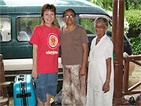
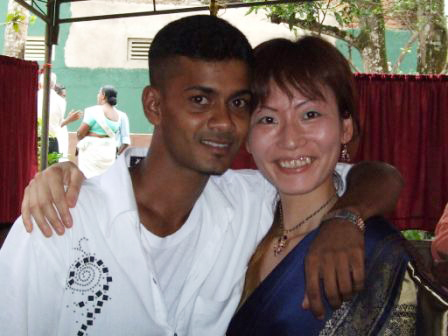

ジャヤワルダナさん夫妻のお宅にホームステイさせていただきました。
お父さんは元海軍のでボイラーエンジニアの社長さん、お母さんは元国家公務員で私の英語の先生をやっていただきました。
家族はお父さんとお母さん、愛犬のポッデーの3人(?)家族です。
特にお母さん手作りのアッチャールに入っているチリが大好きで、チリばっかり食べていたらお母さんから
『胃がおかしくなるよ。スリランカの人でもそんなにチリを食べないわよ』
と止められてしまいました。
お母さんとは、授業以外によく買い物に行き、よく遊びに行きました。
余りにも出掛ける事が多かったので、最後の方は、お母さんと一緒にバスで移動する事が多かったです。

7月上旬からは、ステイ先を変わり、ボランティア活動に参加させていただきました。
農業経営研修、植林の会議、トラクター研修等、参加させていただきました。
特に印象深いのはトラクター研修です。
私もトラクターを運転したのですが非常に難しかったです。
私は1度学校で『5S』の指導をしました。
私自身8年間化学技術の仕事をしていたので5Sは知っているのですが、企業の5Sと学校の5Sは意味合いが違うのですが、うまく説明できたかな?
前の留学生さんが作ったパネルを使って5Sを話しました。
また、絵画教室にも参加させていただきました。

それが実感出来たのは、滞在3ヶ月目です。
スリランカには目上の人に対しては中腰になって頭を下げて合掌し、ハイプリーストには膝をついて頭を下げて合掌するという挨拶をします。
その挨拶をすると、頭を撫でてくれるのですが、その時、ふっと力を分けて頂いた感じになります。
私の場合、エセラポヤデーでお寺に行った時、ハイプリーストに挨拶をして頭を撫でてもらったときに、凄い力を貰った感じになりました。